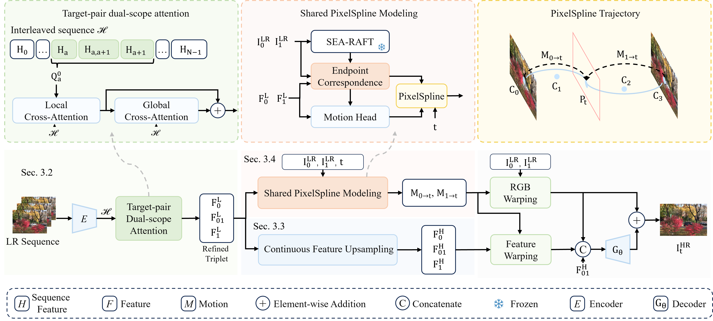
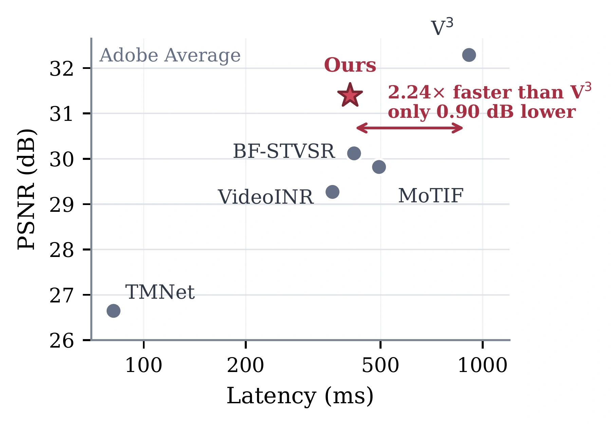
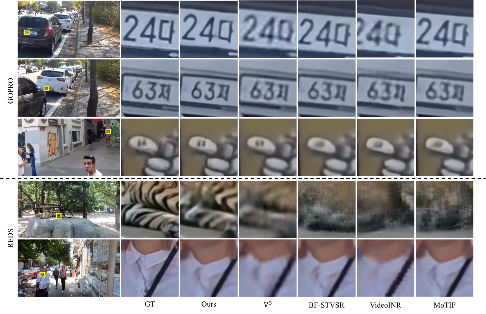
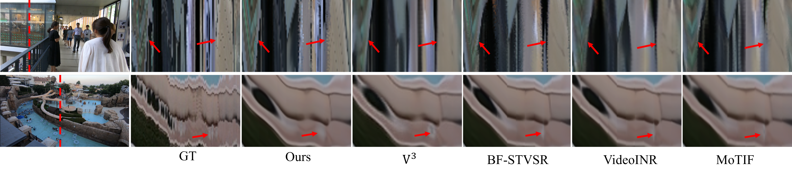

Abstract
Existing continuous space-time video super-resolution methods often infer motion from only two endpoint frames and model the two motion directions independently, making them vulnerable to ambiguous correspondence and inconsistent trajectories. We introduce a continuous STVSR framework that combines long-context encoding, continuous HR feature lifting, and an endpoint-anchored PixelSpline. Long-range observations provide more reliable endpoint representations, while continuous upsampling constructs detailed appearance features directly on the requested HR grid. PixelSpline explicitly models each pixel's motion as a single continuous trajectory shared by both endpoints. Using this trajectory, our method warps endpoint colors into a coarse intermediate frame and aligns the HR features for residual reconstruction. Experiments across spatial and temporal upsampling settings demonstrate that the proposed framework offers a favorable quality–efficiency trade-off.
Method
PixelSpline overview
Given a window of low-resolution frames, PixelSpline reconstructs high-resolution video at an arbitrary spatial scale and query time. Long-context encoding strengthens endpoint representations; continuous feature upsampling lifts appearance onto the requested output grid. An endpoint-anchored shared trajectory then transports both RGB values and features, followed by lightweight residual reconstruction.

Long-context encoding
A bidirectional multi-frame encoder and target-pair attention gather supporting evidence beyond the two anchor frames.
Continuous feature upsampling
Scale-aware continuous filters construct appearance features directly on the requested high-resolution grid.
Shared pixel trajectories
One endpoint-anchored curve describes each matched point’s motion from both endpoints and guides RGB and feature transport.
Experiments
Quantitative results
Joint space-time super-resolution at 4× spatial and 8× temporal upsampling. Values are PSNR (dB) / SSIM; higher is better. “Center” evaluates the input keyframes and the center frame of each interval; “Average” evaluates all reconstructed frames.
| Method | GoPro | Adobe240 | REDS | |||
|---|---|---|---|---|---|---|
| Center | Average | Center | Average | Center | Average | |
| Zooming SlowMo | 30.69 / 0.885 | — | 30.26 / 0.882 | — | — | — |
| TMNet | 24.94 / 0.840 | 24.76 / 0.824 | 27.25 / 0.843 | 26.65 / 0.827 | 22.64 / 0.667 | 19.84 / 0.573 |
| VideoINR | 30.26 / 0.879 | 29.41 / 0.867 | 29.92 / 0.875 | 29.27 / 0.865 | 23.25 / 0.650 | 19.85 / 0.558 |
| MoTIF | 31.12 / 0.889 | 30.14 / 0.879 | 30.63 / 0.884 | 29.82 / 0.875 | 23.62 / 0.654 | 20.01 / 0.556 |
| BF-STVSR | 31.22 / 0.890 | 30.26 / 0.881 | 30.83 / 0.888 | 30.12 / 0.880 | 23.55 / 0.646 | 19.95 / 0.549 |
| V³ | 32.98 / 0.923 | 32.27 / 0.919 | 32.91 / 0.922 | 32.29 / 0.917 | 24.00 / 0.671 | 20.36 / 0.573 |
| PixelSpline (Ours) | 32.21 / 0.912 | 31.47 / 0.906 | 31.99 / 0.913 | 31.39 / 0.907 | 23.78 / 0.651 | 20.04 / 0.549 |
PixelSpline ranks second in PSNR in all six dataset–protocol combinations. V³ achieves the highest PSNR.
Quality–efficiency trade-off
On Adobe240, PixelSpline takes 406.41 ms per output frame, compared with 912.21 ms for V³: a 2.24× speedup with 0.90 dB lower Average PSNR. The timing includes loading, preprocessing, transfers, inference, image conversion, PNG encoding, and disk writing after one full-resolution warm-up pass.

| Method | Latency (ms/frame) ↓ | FPS ↑ |
|---|---|---|
| Zooming SlowMo | 354.72 | 2.82 |
| TMNet | 81.44 | 12.28 |
| VideoINR | 360.58 | 2.77 |
| MoTIF | 494.65 | 2.02 |
| BF-STVSR | 417.51 | 2.40 |
| V³ | 912.21 | 1.10 |
| PixelSpline (Ours) | 406.41 | 2.46 |
Video Results
Adobe240
GOPR9653
IMG_0016
IMG_0024
GoPro
GOPR0384_11_05
GOPR0385_11_01
GOPR0871_11_00
GOPR0881_11_01
Qualitative Results
Visual comparisons at 4× spatial and 8× temporal upsampling. The first three rows show GoPro examples; the last two show REDS. Open the figure to inspect text, textures, and fine object boundaries.

Temporal Consistency
A vertical pixel column, marked by the red dashed line, is sampled from each frame to form a space-time profile. The red arrows mark visible deviations from the reference motion.

| Method | TMNet | VideoINR | MoTIF | BF-STVSR | V³ | PixelSpline |
|---|---|---|---|---|---|---|
| tOF ↓ | 9.944 | 9.495 | 9.391 | 9.237 | 8.923 | 8.171 |
tOF measures the endpoint error between optical flow estimated from adjacent reconstructed frames and the corresponding ground-truth flow.
Spatial-only and temporal-only reconstruction
The same continuous formulation supports spatial-only super-resolution and temporal-only interpolation without architectural changes.
| Setting | VideoINR | MoTIF | BF-STVSR | V³ | PixelSpline |
|---|---|---|---|---|---|
| Spatial 4× / Temporal 1× | 25.97 / 0.775 | 26.21 / 0.780 | 26.28 / 0.782 | 27.15 / 0.819 | 26.78 / 0.808 |
| Spatial 1× / Temporal 8× | 19.76 / 0.462 | 28.86 / 0.864 | 29.42 / 0.810 | 31.15 / 0.862 | 29.01 / 0.890 |
BibTeX
@inproceedings{yuan2027pixelspline,
title = {PixelSpline: Continuous Space-Time Video Super-Resolution via
Endpoint-Anchored Shared Pixel Trajectories},
author = {Yuan, Wanqi and Li, Nianyi},
booktitle = {Proceedings of the IEEE/CVF Winter Conference on
Applications of Computer Vision (WACV)},
year = {2027}
}Provisional citation. Final publication details will be updated when available.